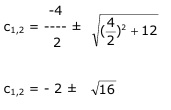
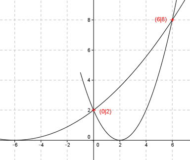

Aufgabe 8 Der Graph einer ganzrationalen Funktion 2. Grades geht durch die Punkte A((0|2) und B(6|8) und berührt die x-Achse im Punkt (c|0). Wie lautet seine Funktionsgleichung? Berührt die x-Achse bedeutet, dort liegt der Scheitelpunkt. Scheitelpunktform: f(x) = a(x - c)2 Koordinaten von A in die Scheitelpunktform eingesetzt: 2 = a(0 - c)2 2 = a * (-c)2 = ac2 |:c2 2 a = ---- I c2 Punktkoordinaten von B und A in die Scheitelpunktform eingesetzt: 2 8 = ---- (6 - c)2 |*c2 c2 8c2 = 72 - 24c + 2c2 |-2c2 6c2 = 72 - 24c |*24c 6c2 + 24c = 72 |-72 6c2 + 24c - 72 = 0 |:6 c2 + 4c - 12 = 0 p, q - Formel p = 4, q = -12  c1,2 = -2 ± 4 c1 = -2 +4 = 2 c2 = -2 - 4 = -6 c1 = 2 und c2 = -6 in I eingesetzt: 2 2 2 a1 = ------ = ---- = --- = 0,5 (c1)2 22 4 2 2 2 1 a2 = ------ = ---- = ---- = ---- (c2)2 62 36 18 Gesuchte Funktionsgleichung: f(x) = 0,5(x - 2)2 oder 1 f(x) = ---- (x + 6)2 18 